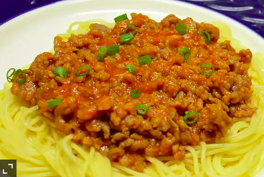

Dad's Spaghetti
Home

Description
Spaghetti like never before invented. Enjoy!
Ingredients
- 1 pound spaghetti
- 2 pounds lean ground beef
- 1 onion minced
- 1 (6 ounce) can tomato paste
- 2 (10.75 ounce) cans condensed tomato soup
- 2 & 1/2 cups water
Directions
- Bring a large pot of slightly salted water to a boil. Add pasta and cook for 8 to 10 minutes or until al dente then drain.
- In a large skillet over medium heat, cook ground beef with onion until meat is brown. Drain. Return meat mixture to pan with tomato paste, tomato soup and water. Cook, stirring until heated through and thickened, 5 to 15 minutes. Serve over cooked pasta.